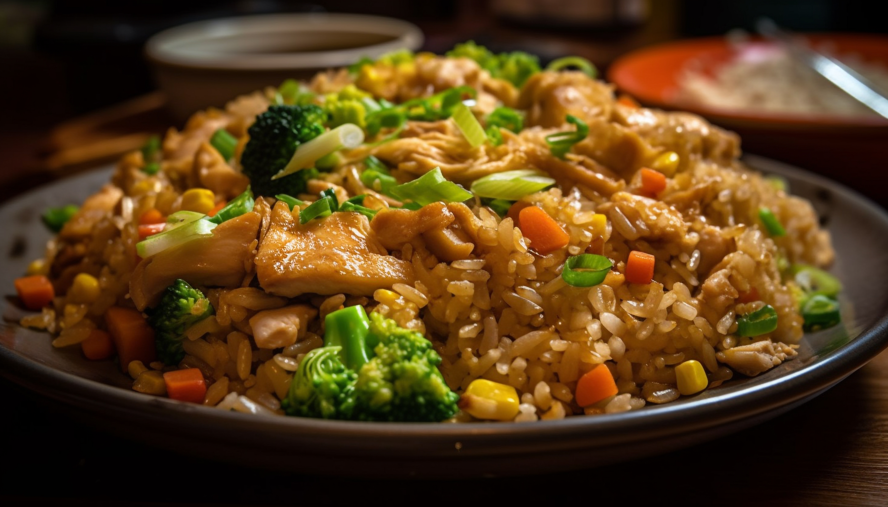

Rice Recipes

Fried Rice
Fried rice is a popular dish made from pre-cooked rice that is stir-fried in a wok or frying pan with various ingredients such as vegetables, eggs, and meat or seafood. It is a versatile dish that can be customized with different flavors and ingredients based on personal preferences.
Typically, fried rice is seasoned with soy sauce, garlic, and sometimes sesame oil, giving it a savory and aromatic flavor. It is often served as a side dish or as a main course, and it can be enjoyed hot or at room temperature. Fried rice is a great way to use leftover rice and can be made quickly, making it a convenient meal option.
Ingredients
- 2 cups cooked rice (preferably day-old)
- 1 cup mixed vegetables (carrots, peas, bell peppers)
- 2 eggs, beaten
- 2 tablespoons soy sauce
- 1 tablespoon vegetable oil
- 2 green onions, chopped
- Salt and pepper to taste
Steps
- Heat the vegetable oil in a large skillet or wok over medium-high heat.
- Add the mixed vegetables and stir-fry for about 2-3 minutes until they are tender.
- Push the vegetables to one side of the skillet and pour the beaten eggs into the empty space. Scramble the eggs until fully cooked.
- Add the cooked rice to the skillet, breaking up any clumps. Stir everything together.
- Pour the soy sauce over the rice and mix well. Season with salt and pepper to taste.
- Stir in the chopped green onions and cook for an additional minute.
- Serve hot as a side dish or main course.
Back to Recipes